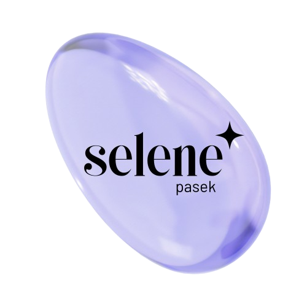

estudiando
ASIR · segundo curso
Administración de Sistemas Informáticos en Red, en Digitech. Redes, servidores Linux y Windows, y bastionado de sistemas.
Apasionada por Linux, redes y la infraestructura Cloud Lista para aportar y aprender en cualquier área de IT.

estudiando
ASIR · segundo curso
Administración de Sistemas Informáticos en Red, en Digitech. Redes, servidores Linux y Windows, y bastionado de sistemas.
estudiando
Certificación AZ-104
Microsoft Azure Administrator. Siguiente paso tras el AZ-900: identidad, redes virtuales y almacenamiento en la nube.